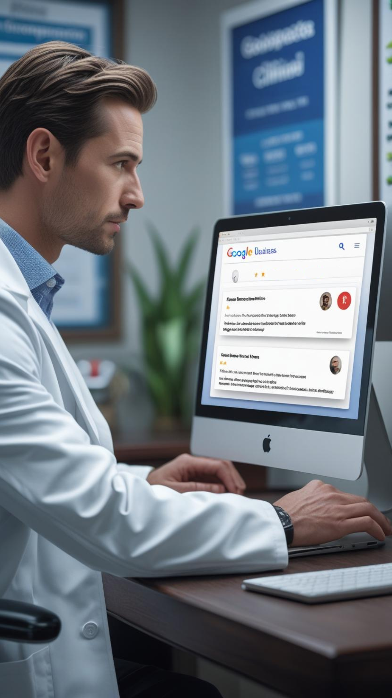
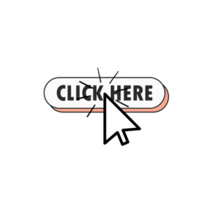
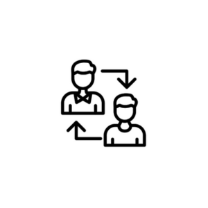
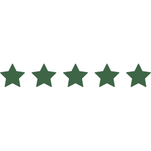

Boost your chiropractic practice’s reputation with our FREE Google Review App.
Book My Free Google Review App Now
You deliver excellent care — but most patients leave without leaving a review. That’s hurting your visibility, trust, and growth.
Potential patients skip your clinic if they see too few or outdated reviews.
Your team’s too busy running a clinic to send follow-ups or ask every patient.
Texts and emails feel awkward, and most never actually click the link.
Google rewards review volume and frequency — without it, you rank lower and lose patients every week.
As a former practicing physician turned digital marketer, I know what it’s like to deliver excellent care — and still watch potential patients pass you by online. I created this app because I’ve seen too many great providers lose business simply because they don’t have the reviews to match the results they deliver.
One chiropractor told me, “Our patients love us, but we’re stuck on 18 reviews.” That hit home. It’s not that patients don’t want to leave reviews — they just forget. And most teams don’t have the time or systems in place to follow up consistently. That’s where good care gets lost in the noise.
It’s simple: download it to your browser and open it on a front-desk kiosk. Right after an adjustment — when patients are feeling the results — they can leave a 5-star review on the spot. No downloads, no awkward texts, no chasing. Plus, for repeat patients, the app can be saved to their phone like a regular app in just a few easy steps — so it’s always accessible when they want to support your clinic again. Branded, fast, and fully automated follow-ups make sure no review opportunity slips by. More trust. More visibility. More growth.

Send ready-to-use templates with a single tap.
Personalize your review link with your practice name and logo.

Remind patients to leave a review using SMS or email automation.
Patients leave reviews without installing anything.
Schedule a quick call to set up your free Google Review App and start attracting more 5-star reviews.
Receive a custom review link branded for your clinic to easily share with patients.
Happy patients click the link and leave glowing review directly on Google, boosting your reputation effortlessly.

“Great personality!! Easy and very fun to work with! Has produced great project. Makes something that seems very daunting manageable. 10/10 recommend working with Nada.”
– Erica Pohlman“"It's wonderful to meet such an outstanding individual like Nada — a great Software Engineer whose passion and dedication is felt in every interaction. Nada's amazing work ethic and exceptional problem-solving skills are truly inspiring. I am grateful for the invaluable help she provided, and I am eagerly anticipating the thrilling journey ahead, where I can collaborate with Nada to craft extraordinary technological innovations. Thank you, Nada, for your exceptional support." - Wilkin Ruiz”
– William Ruiz“"Nada is a tech wizard. She's a self-taught software engineer who keeps going until she gets the job done. She explains things in laymen's terms when possible and is an awesome teacher. She always shows up and makes sense of things. So grateful for her work and time.” - Rachel Nichols”
– Rachel Nichols“"Working with Nada was like dancing through a spectrum of creativity! Her infectious energy and collaborative approach made the entire process a delightful adventure. Her creativity knows no bounds. She's not just a web developer; she's a digital artist who turns dreams into reality!" - Chancello Miller”
– Chancello Miller“Great personality!! Easy and very fun to work with! Has produced great project. Makes something that seems very daunting manageable. 10/10 recommend working with Nada.”
– Erica Pohlman“"It's wonderful to meet such an outstanding individual like Nada — a great Software Engineer whose passion and dedication is felt in every interaction. Nada's amazing work ethic and exceptional problem-solving skills are truly inspiring. I am grateful for the invaluable help she provided, and I am eagerly anticipating the thrilling journey ahead, where I can collaborate with Nada to craft extraordinary technological innovations. Thank you, Nada, for your exceptional support." - Wilkin Ruiz”
– William Ruiz“"Nada is a tech wizard. She's a self-taught software engineer who keeps going until she gets the job done. She explains things in laymen's terms when possible and is an awesome teacher. She always shows up and makes sense of things. So grateful for her work and time.” - Rachel Nichols”
– Rachel Nichols“"Working with Nada was like dancing through a spectrum of creativity! Her infectious energy and collaborative approach made the entire process a delightful adventure. Her creativity knows no bounds. She's not just a web developer; she's a digital artist who turns dreams into reality!" - Chancello Miller”
– Chancello MillerSchedule a quick call to learn more and start boosting your online reputation.
Book My Free Google Review App NowNot quite ready to book? No problem!
Join our email list to get helpful tips, updates, and exclusive offers to grow your practice.